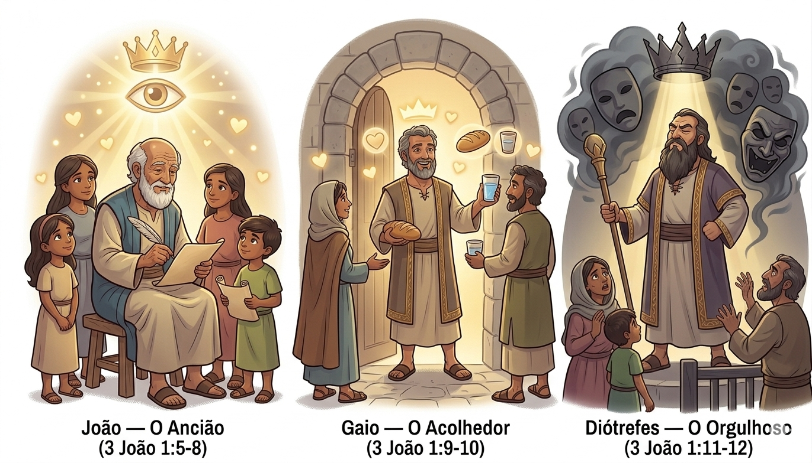
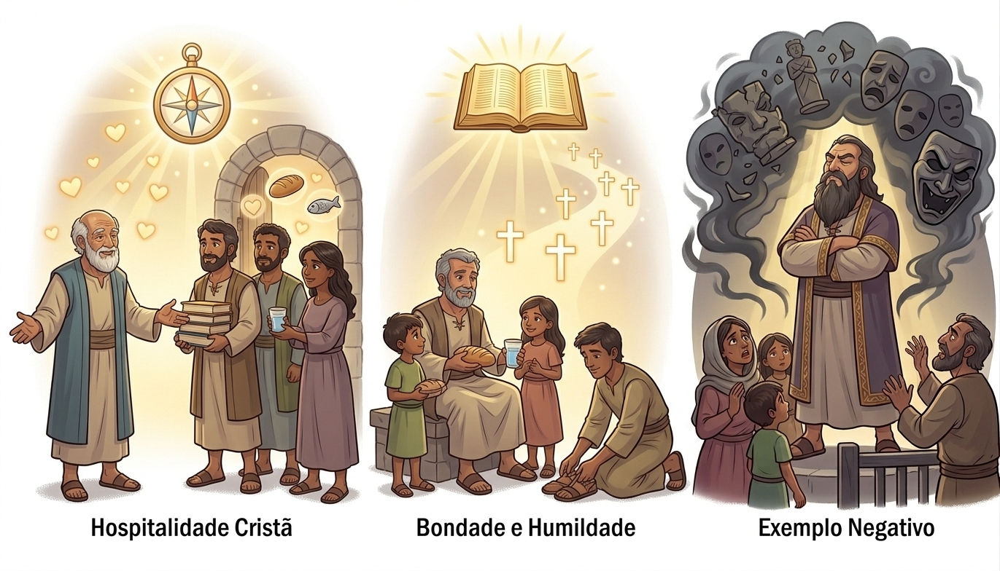
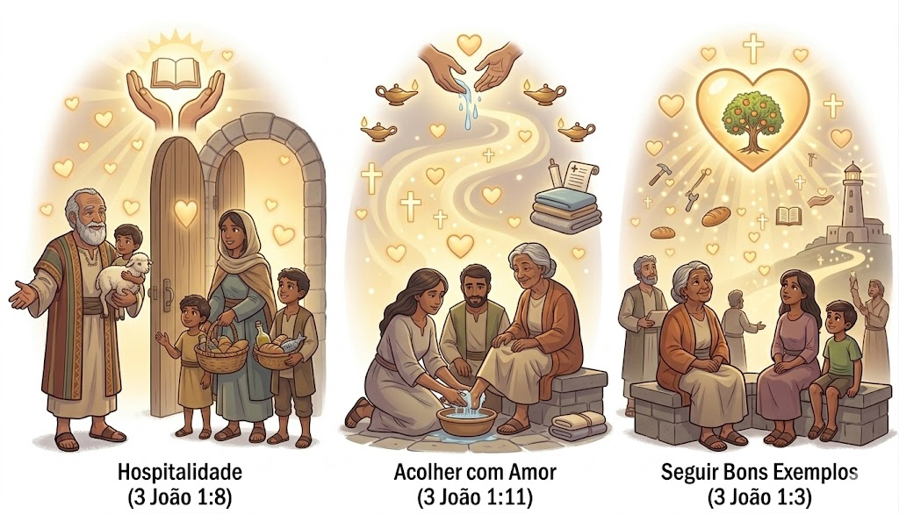
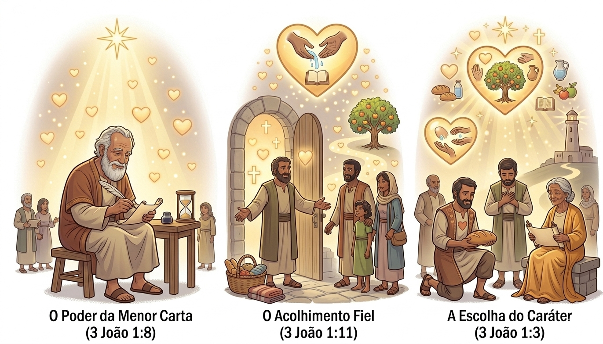

Hospitalidade e Amor — Um Resumo Visual para Crianças
Gaio abriu sua porta com alegria,
Recebeu os missionários todo dia,
Com comida, carinho e oração,
Mostrou hospitalidade do coração!
— 3 João 1:5-6
Diótrefes queria ser o primeiro,
Não ajudava ninguém, só pensava em dinheiro,
O orgulho fechou seu coração,
Mas Jesus quer humildade e compaixão!
— 3 João 1:9-10
João escreveu: "Imite o que é bom",
Seja gentil, acolhedor e um amigão,
Quem pratica o bem conhece a Deus,
E espalha Seu amor pelos céus!
— 3 João 1:11

O apóstolo amado que escreveu esta carta cheia de amor e sabedoria para seus amigos.
Um amigo fiel e generoso que abria sua casa para receber missionários com alegria e hospitalidade.
Um líder orgulhoso que queria ser o primeiro e não ajudava os servos de Deus.
João conta como Gaio recebia missionários em sua casa com amor, comida e cuidado.
O livro ensina que devemos servir uns aos outros com humildade, sem orgulho.
Diótrefes é mostrado como exemplo do que NÃO fazer: ser orgulhoso e egoísta.

Mostra que devemos acolher e ajudar quem trabalha para o Reino de Deus com amor e generosidade.
Ensina que o orgulho afasta as pessoas de Deus e que devemos ser humildes.
Nos desafia a imitar o que é bom e espalhar o amor de Jesus por onde passamos.
Mostrar a importância de abrir nossas casas e corações para ajudar quem serve a Deus.
Incentivar a bondade, generosidade e o cuidado com os irmãos na fé.
Ensinar que devemos imitar pessoas como Gaio, que praticam o bem com alegria.


João elogia Gaio por receber missionários em sua casa — um exemplo incrível de hospitalidade cristã!
Nos tempos bíblicos, não havia hotéis como hoje. Por isso, abrir a casa para viajantes que pregavam o evangelho era essencial! Gaio fazia isso com alegria, oferecendo comida, descanso e encorajamento. Que exemplo maravilhoso de amor prático! 💙
© 2025 - Trilho Kids
Desenvolvido com ❤️ para crianças